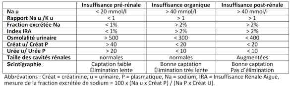
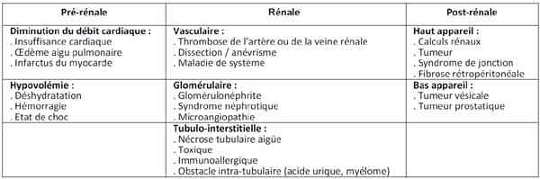

Bienvenue Sur Medical Education
Insuffisance rénale aiguë
Spécialité : genito-urinaire /
Points importants
- C'est un syndrome et non une maladie
- Diagnostic clinique peu spécifique et parfois asymptomatique tardivement
- L'anurie n'est présente que dans 50% des cas
- L'insuffisance rénale aiguë est un motif d'hospitalisation rare (1%)
- L'insuffisance rénale peut constituer une urgence vitale par ses conséquences métaboliques : hyperkaliémie, acidose métabolique et surcharge hydro-sodée
- Une insuffisance rénale aiguë doit faire rechercher une étiologie fonctionnelle (atteinte pré-rénale) ou une étiologie obstructive (post-rénale) rapidement réversibles avant d'envisager une cause purement rénale (organique)
- L'Epuration Extra-Rénale (EER) est à proposer en cas de menace vitale mais doit être précédée de traitements symptomatiques le temps de sa mise en oeuvre
- La clairance calculée fait appel à la formule de Cockroft and Gault (cl = [140 - âge] x poids [kg] x k/ créatinémie plasmatique [µmol/L] avec k= 1,04 chez l'homme et k = 1,23 chez la femme)
Présentation clinique / CIMU
SIGNES FONCTIONNELS
Généraux
- Fatigue
- Douleur ou pesanteur lombaire
- Ralentissement idéomoteur
- Oligo-anurie
-
Signes d'hypovolémie :
- hypotension orthostatique
- soif, muqueuses sèches
- tachycardie
- pli cutané
- extrémités froides...
- Prise de poids parfois associé à un oedème des membres inférieurs
Spécifiques
-
Cardiaque :
- mort subite par trouble du rythme sur hyperkaliémie le plus souvent
-
troubles du rythme :
- tachycardie ventriculaire
- voire fibrillation ventriculaire
- HTA
- OAP d'origine cardiogénique en cas de cardiopathie préexistante
- péricardite urémique avec rare tableau d'insuffisance ventriculaire droite aiguë ou de tamponnade
-
Digestif :
- nausées - vomissements (peuvent être la cause comme la conséquence)
- douleurs sus-pubiennes
-
Neurologique :
- syndrome confusionnel
-
Respiratoire :
- polypnée pour lutter contre l'acidose métabolique
- dyspnée en cas de décompensation cardiaque conjointe
-
Urologique :
- hématurie macro ou microscopique
- urines « porto » : myoglobinurie
- dysurie
-
Métabolique :
- hyperkaliémie avec menace vitale potentielle (absence d'élimination + transfert extracellulaire de potassium secondaire à l'acidose)
- surcharge hydrosodée
- acidose métabolique consécutive à une élévation des ions H+ produits par le catabolisme cellulaire
-
Cutané :
- arthralgies, éruption cutanée évocatrices d'une néphrite interstitielle allergique
- orteils pourpres ou livedo reticularis évocateurs du diagnostic d'emboles de cholestérol
- purpura palpable évocateur de vascularite
- lésions de grattage en cas d'insuffisance rénale chronique
CONTEXTE
Terrain
- Insuffisance rénale chronique connue
- Syndrome tumoral avec envahissement du petit bassin
- Vasculaire : diabète ou athérosclérose
- Traumatisme en particulier musculaire
Traitement usuel
- Anti-cholinergique ou alpha-bloquant à l'origine d'insuffisance rénale obstructive
- Aciclovir, méthotrexate, indanavir à l'origine de lithiase
- Anti-inflammatoires non stéroïdiens (surtout pour un âge > 75 ans)
- Inhibiteurs de l'Enzyme de Conversion (IEC)
- Aminoglycoside
Antécédents
- ATCD de rein unique (rein en fer à cheval, néphrectomie...)
- Maladie lithiasique connue
- Radiothérapie abdomino-pelvienne
Facteurs de risque
- Age par altération physiologique de la fonction rénale (> 75 ans)
- Déshydratation aiguë
Circonstances de survenue
-
Syndrome infectieux avec déshydratation globale :
- pertes digestives (vomissements, diarrhées, troisième secteur...)
- pertes cutanées (brûlures...)
- pertes rénales sur reins sains (polyuries osmotique du diabète ou secondaire à l'administration de mannitol...)
- pertes rénales sur néphropathie préexistante (atteinte néphrogénique)
- syndrome de levée d'obstacle, néphrites
- Etat de choc +/- injection de produit de contraste
- Rhabdomyolyse importante
-
Toxique :
- médicaments néphrotoxiques (aminosides, glycopeptides, amphotéricine B...),
- AINS, inhibiteurs de l'enzyme de conversion, inhibiteurs des récepteurs de l'angiotensine II
- produits de contraste iodés
- voire héroïne
- Hémolyse intravasculaire (incompatibilité ABO, paludisme, hémoglobinopathie...)
-
Contexte post-opératoire :
- chirurgie vasculaire de l'aorte
- chirurgie cardiaque sous CEC
- chirurgie en urgence ou hémorragique
-
Contexte de réanimation :
- défaillance multiviscérale (facteur de mauvais pronostic dans ce contexte)
EXAMEN CLINIQUE
-
Diurèse des 24 heures :
- oligurie (< 0,5 L/24 h)
- ou anurie très évocatrice
- Auscultation cardio-pulmonaire
- Recherche de signe de surcharge hydrosodée
- Douleur à la palpation des fosses lombaires
- Touchers Pelviens : hypertrophie prostatique, anomalie de structure prostatique, blindage pelvien
- Recherche de signes dits extra-rénaux : fièvre, arthralgie, purpura...
EXAMENS PARACLINIQUES SIMPLES
-
Bandelette urinaire :
- protéinurie (abondance et quantité/24heures)
- densité urinaire
CIMU
- Tri 1 à 4
Signes paracliniques
BIOLOGIQUES
Ionogramme sanguin
- Kaliémie
-
Créatinine, urée plasmatiques sont les 2 examens de diagnostic biologique. Leur élévation signe le diagnostic d'insuffisance rénale :
- Urée > 8,35 mmol/L
- Créatininémie > 130 µmol/L ou élévation > 100 µmol/j
-
Une élévation proportionnellement plus importante de l'urée (filtrée et réabsorbée) par rapport à la créatinine (filtrée et non réabsorbée) telle que urée # 0.045 x créat est évocatrice :
- d'une étiologie fonctionnelle
- d'un apport protéique élevé
- ou d'un catabolisme cellulaire marqué (infection, hémorragie digestive...)
- Un doublement de la créatinine plasmatique correspond à une diminution du débit glomérulaire de 50%
- Calcul de la clairance de la créatinine : Cl = (140 - âge) x poids / créatininémie x k avec k = 1,04 chez la femme et k = 1,23 chez l'homme
- Mesure de la clairance de la créatinine : Cl = (créat U (mmol/L) x Volume urinaire (mL) x 1000) / (créat plasmatique (µmol /L) x 60 X 24)
NFS + plaquettes (anémie chronique microcytaire)
Calcémie, Phosphorémie
- Hypocalcémie et hyperphosphorémie signent une atteinte rénale chronique
- Hypercalcémie et hypophosphorémie associées à une élévation des LDH témoignent d'un syndrome de lyse tumorale
Acide urique (hyperuricémie)
IMAGERIE
Echographie rénale morphologique
- Taille des reins : de petits reins ou une atrophie corticale pouvant signer une insuffisance rénale chronique préexistante
- Recherche d'une dilatation des cavités pyélocalicielles témoignant d'un obstacle sur les voies excrétrices
- Polykystose rénale éventuelle
- La taille des reins est normale en cas de diabète (évoluant depuis plus de 10 ans), d'amylose et de polykystose
Scanner abdomino-pelvien avec réalisation d'une UIV
- Temps d'acquisition tardif après injection de produit de contraste
- Evaluation de la fonction excrétrice du rein
- Examen morphologique précis
Scintigraphie
Indication à une biopsie rénale
- Présence d'oedème, d'HTA
- Présence d'une protéinurie abondante voire d'un syndrome néphrotique
- Présence d'une hématurie (micro ou macroscopique) sans caillot
- Circonstances étiologiques confuses
-
Absence de reprise d'une fonction dans les délais attendus
Diagnostic étiologique
 _407 Tableau Sémiologie étiologique de l'insuffisance rénale aiguë
 _675 Tableau Etiologies de l'insuffisance rénale aiguë
Insuffisance rénale aiguë fonctionnelle
-
Altération du débit de filtration glomérulaire (insuffisance prérénale) par diminution du débit sanguin rénal :
- hypovolémie, défaillance circulatoire
Insuffisance rénale aiguë obstructive (ou post-rénale)
- Obstacle sur les voies excrétrices depuis les reins jusqu'à l'urètre
Insuffisance rénale aiguë d'autre origine
- Nécrose tubulaire aiguë, organique
Diagnostic différentiel
- Rétention aiguë urinaire
Traitement
TRAITEMENT PREHOSPITALIER / INTRAHOSPITALIER
Stabilisation initiale
-
OAP :
- diurétique si diurèse conservée : furosémide 1 mg/kg IVD ou bumétamide 0,025 mg/kg en IVD
- oxygénothérapie voire VNI (mode CPAP ou VS aide + PEP) en cas d'oligo-anurie
-
contrôle de la PA en cas d'HTA associée :
- nicardipine en titration 1 mg toutes les 5 min IVD
- puis entretien nicardipine dose titrée/h IVSE
-
Hyperkaliémie :
-
gluconate de calcium :
- 1 ampoule (10 mL) IVL sur 2 à 5 min
- renouveler une fois en cas de signes ECG d'hyperkaliémie persistants
-
diurétiques de l'anse si diurèse conservée :
- furosémide : 40 à 80 mg IVD puis entretien en IVSE (125 mg à 2 g/24 h)
-
bicarbonates de sodium :
- bicarbonates 42 ‰ : 250 mL IVL
-
sérum glucosé-insuline :
- glucosé 5% + 5 à 10 UI / 500 mL IVL
- ou glucosé 30% + 30 UI / 500 mL IVL
- contrôles glycémiques réguliers
-
kayexalate :
- 1 à 2 cuillères mesure per os ou en lavement
-
gluconate de calcium :
- Epuration Extra-Rénale (EER) en Urgence si acidose sévère, OAP ou signes ECG ne régressant pas totalement (les traitements médicaux décrits précédemment doivent être institués auparavant)
-
Acidose métabolique :
- possibilité de bicarbonate pour des acidoses très sévères (pH < 7,15)
- bicarbonates 42 ‰ : 250 mL IVL
Stabilisation initiale en l'absence de signe de gravité
-
Expansion volémique :
- correction de toute hypovolémie
- épreuve de remplissage par cristalloïdes : NaCl 0,9% : 250 mL IVL sur 20 min
-
Diurétiques de l'anse :
- possible une fois la volémie efficace du patient corrigée
- pas d'effet sur l'évolution de l'insuffisance rénale
- permet éventuellement de convertir une insuffisance rénale anurique en insuffisance rénale à diurèse conservée
-
Dopamine :
- dans l'état actuel des connaissances, le recours à la dopamine même à « dose rénale » (< 5 mg/kg/min) n'est pas justifié au cours de l'insuffisance rénale aiguë
-
Prévention des hémorragies digestives :
- inhibiteur de la pompe à protons : oméprazole 20 mg/j
- Correction de l'étiologie dès que celle-ci est déterminée
- Eviter l'administration de substances néphrotoxiques (iode, aminosides, AINS...)
- Ajustement des autres traitements à la clairance de la créatinine
- Limitation des apports sodés (2 g/j), limitation des apports protidiques (20 g/j)...
Suivi du traitement
- Contrôle des anomalies hydro-électrolytiques
- Restriction hydrique adaptée aux sorties du patient
- Réduction des apports potassiques quotidiens
- Prévention des infections
-
Possibilité de syndrome de levée d'obstacle en cas d'IRA obstructive dérivée :
- polyurie non osmotique (diurèse horaire > 4 mL/kg)
- surveillance du bilan entrée/sortie
- surveillance du bilan hydro-électrolytique (Na, K)
MEDICAMENTS
- Diurétiques de l'anse
- Dopamine
Surveillance
CLINIQUE
- Correction de la volémie
- PA, FC, FR, température...
- Diurèse
PARACLINIQUE
- ECG régulier pendant les premières 12 heures de la prise en charge
- Ionogramme sanguin : urée, créatinine, Na, K
Devenir / orientation
CRITERES D'ADMISSION
Critères de réanimation
- Insuffisance rénale sévère avec signes de complications : hyperkaliémie, acidose métabolique et surcharge hydrosodée
- Score de gravité élevé
Mécanisme / description
Métabolisme de l'insuffisance rénale aiguë d'origine fonctionnelle
- La compréhension des mécanismes physiopathologiques de l'IRA reste imparfaite malgré l'abondance de la littérature expérimentale et clinique. Néanmoins, les phénomènes d'ischémie-reperfusion rénale restent les principaux déterminants de la dégradation de la fonction rénale dans la majorité des situations cliniques. Ceci est évident pour toutes les situations d'hypoperfusion rénale contemporaine d'un état de choc, mais est également retrouvé dans les atteintes par les agents toxiques exogènes et endogènes.
- Les insuffisances rénales aiguës fonctionnelles se définissent comme une baisse du débit de filtration glomérulaire consécutif à une diminution de la pression de perfusion rénale du fait d'un bas débit cardiaque, d'une HoTA systémique ou d'une vasodilatation artérielle. Elles représentent 60% des IRA aiguës. Cette altération de la filtration glomérulaire est instantanément réversible en cas de correction de la perfusion rénale et ne s'accompagnent d'aucune altération des structures histologiques rénales. Elle traduit une adaptation rénale aux modifications de ses conditions de perfusion.
- La baisse de la pression de perfusion rénale entraîne la mise en jeu de phénomènes d'autorégulation de la filtration glomérulaire marqués par une vasodilatation de l'artériole afférente du glomérule, visant à maintenir le débit plasmatique glomérulaire, et par une vasoconstriction de l'artériole efférente du glomérule, visant à maintenir la pression hydrostatique glomérulaire et la pression d'ultrafiltration glomérulaire. Cette vasoconstriction de l'artériole efférente est sous la dépendance de l'activation de l'appareil juxta glomérulaire et de la production d'angiotensine II sous l'effet d'une stimulation de la libération locale de rénine. Ceci explique que la filtration glomérulaire de patients dont les reins sont hypo perfusés peut s'aggraver lors de l'administration concomitante d'inhibiteur de l'enzyme de conversion.
- De même, le maintien relatif d'un débit de perfusion rénale, malgré une baisse de la pression de perfusion rénale et une activation du système rénine-angiotensine, implique la production locale de prostaglandines vasodilatatrices. Cette protection rénale peut également être inhibée par l'administration d'inhibiteur de la cyclo-oxygénase comme les AINS ou les inhibiteurs spécifiques de la COX-2 qui bloquent la production de prostaglandines.
- Les conséquences sur la fonction rénale de ces phénomènes d'adaptation à une baisse de la pression de perfusion sont une réabsorption majeure d'eau et de sodium avec une anti-natriurèse, une anti-diurèse et une conservation du pouvoir de concentration des urines témoignant de l'intégrité des fonctions tubulaires. La baisse du débit de filtration glomérulaire et l'augmentation de la réabsorption hydrosodée tubulaire s'accompagnent d'une réabsorption de l'urée filtrée et souvent d'une élévation plus marquée de l'urée plasmatique par rapport à l'élévation de la créatinine.
Bibliographie
- Urgences médico-chirurgicales de l'adulte. P Carli, B Riou, C Telion. 2ème édition. Arnette. p 624-625
- Anesthésie - Réanimation Chirurgicale. K Samii. 3ème édition. Médecine-Sciences Flammarion. p 833-846
- Conférences d'actualisation Sfar 2005 - L Jacob. Elsevier, Paris. p 433-445
-
www.nephrohus.org
Auteur(s) : Morgan LE GUEN